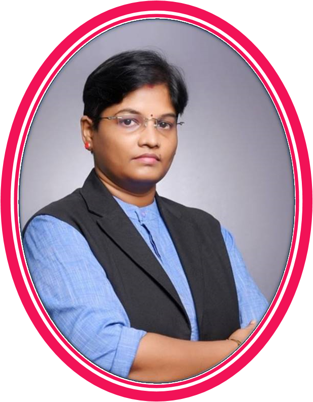

DR.SUBATHRA CHELLADURAI, is a
woman with ambition, Born on 1st Nov 1982 in a Tamil - Hindu family, She
is the third child of Chelladurai and Sushila of Sivangnapuram Village,
a tiny village in Tirunelveli District in Tamilnadu, India . She was
graduated in Commerce from SNDT Women’s University, Mumbai, and
completed PG and M.Phil in Commerce form Madurai Kamaraj University. She
has been awarded with Ph.D in Commerce from Manonmaniam Sundaranar
University, Tirunelveli , now acting as a Research Supervisor and
Guiding M.Phil and Ph.D Scholars. She has also completed M.A.Sociology,
PGDHRM and M.Sc.Psychology. She is working as an Assistant Professor of
Commerce in Pioneer Kumaraswamy College, Nagercoil, Since 2013. She has
18 years of Teaching and Administrative experience in Schools, Colleges
and NGO’s. She has participated in more than 200 National and
International Seminars , Webinars, and Training Programs and published
more than 60 Research articles and 11 Books. She is a NLP, Soft Skill
Trainer and Counselor. She Served as Resource person and delivered her
Expertise in Various Institutions. She is an Authorised Resource Person
of Value Idea Investment Services, Xcelerating Minds, BSE , Mumbai, She
acts as the resource person for National and International seminars and
Conferences and had delivered several guest lecturers for Academic
upliftment.